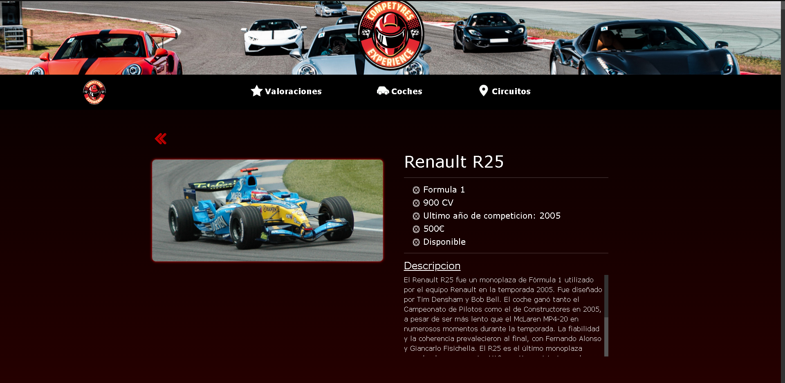

Manual de Usuario
Lo primero que se encontrara al entrar en la app seran las valoraciones que hemos recibido de parte de los usuarios. Como puede ver en letra mas pequeña, debe registrarse o iniciar sesion para poder realizar reservas. Para registrarse haga click en 'Registrate' para ser redireccionado a la pantalla de registro. Para iniciar sesion haga click en 'Inicia sesion' para ser redireccionado a la pantalla de inicio de sesion.
En esta pantalla debe rellenar los datos de foma valida y hacer click en 'Registrarse' para crear su cuenta. Una vez pulse el boton, sera redireccionado de nuevo a la pantalla de valoraciones para que pueda iniciar sesion o seguir observando la app.
En esta pantalla debe introducir su correo y contraseña con las que se registró previamente en la pantalla de registro. Si sus credenciales son correctas sera redirigido a la pantalla de valoraciones pero esta vez la app habra cambiado en algunos aspectos que explico en la siguiente pestaña.
Como podemos ver en la captura ahora nos aparece un boton que nos permite añadir una valoracion sobre la experiencia que ha tenido el usuario al contratar nuestros servicios. Como podemos ver, han aparecido dos iconos en la barra del menu. Tenemos la 'Bandera' que nos permite ir a la pantalla de reserva y tenemos el icono de usuario que nos permite ver la pantalla del perfil del usuario.
Aqui podemos ver lo que sucede si pulsamos el boton amarillo que no dice 'Añadir valoracion'. Se abre un campo de texto en el que podemos escribir un comentario con un numero de caracteres limitados. Tambien tenemos 5 'estrellas' que representan una puntuacion del 1 al 5 para esta valoracion. Si pulsamos enviar volvera a aparecer el boton amarillo y nuestra valoracion aparecera abajo entre todas las valoraciones de los demas usuarios. Cada usuario solo podra poner una sola valoracion, si ya tenemos una creada, al crear una nueva esta se sobrescribirá. Si pulsamos cancelar no se publicara nada y volvera a aparecer el boton amarillo.
Si pulsamos en el icono de usuario podemos ver nuestro perfil, en el que apareceran nuestros datos. Al lado de nuestros datos aparece un icono que al pulsarlo cerraremos sesion y seremos redireccionado a la pantalla de valoraciones que estará como cuando entramos a la app por primera vez. Si tenemos alguna reserva pendiente nos aparecera como se ve en la imagen, pero si no tenemos ninguna reserva pendiente no nos aparecera nada, ni siquiera en titulo de 'Reservas Pendientes'. Las reservas que tenemos aun no se han cumplido por lo que podemos cancelarlas pulsando en 'Cancelar reserva'. El historial de reservas contiene las reservas que ya han cumplido y son anteriores al dia actual, como ya han pasado no tenemos nada que cancelar asi que solo aparecen a nivel informativo.
Al pulsar 'Cancelar reserva' nos saldra una ventana modal que nos preguntara si estamos seguros de cancelar la reserva, si decimos que si, nuestra reserva sera cancelada y si decimos que no, nuestra reserva seguira igual que antes de pulsar.
Al estar logueados por fin podemos realmente utilizar la funcion principal de esta app, y esa funcion es realizar reservas. Si pulsamos en la banderita nos aparecera esta pantalla en la que podemos realizar una reserva. En primer lugar debemos escoger una fecha para nuestra reserva ya que cada coche y circuito dependen de la fecha para su disponibilidad. Una vez tengamos la fecha, debemos elegir un coche y un circuito. Si pulsamos en 'elegir circuito' o 'elegir coche' nos llevara a la pantalla de circuitos o de coches donde encontraremos todos los circuitos o todos los coches coches.
En esta pantalla aparecen varios elementos, un buscador, en el cual el usuario puede buscar por nombre de circuito o por su ubicacion, tambien podemos ver un componente con una fecha, esa sera la fecha seleccionada para la reserva, si la cambiamos aqui tambien cambiara en la pantalla de reserva, por ultimo tenemos lo mas importante, los circuitos. Al hacer click sobre cualquier circuito seremos enviados a una pantalla de detalles sobre ese circuito en el que hemos hecho click.
En esta pantalla podemos añadir el circuito a nuestra pagina de reserva si este esta disponible, pulsando en el boton 'Añadir a la reserva' de color verde situado abajo en la pantalla, una vez pulsado este boton nos llevara a la pantalla de reserva con el circuito ya añadido. Ademas de añadir el circuito a la reserva podemos ver mas detalles sobre este mismo y si pulsamos la imagen, la veremos ampliada por si queremos apreciar mas detalles sobre esta. Por ultimo tenemos un icono de dos flechas rojas que nos permitiran retroceder a la pantalla de circuitos para poder seleccionar otro, en caso de no querer el actual.
En esta pantalla aparecen varios elementos, un buscador, en el cual el usuario puede buscar coches por modelo, escuderia o categoria, tambien podemos ver un componente con una fecha, esa sera la fecha seleccionada para la reserva, si la cambiamos aqui tambien cambiara en la pantalla de reserva, por ultimo tenemos lo mas importante, los coches. Al hacer click sobre cualquier coche seremos enviados a una pantalla de detalles sobre ese coche en el que hemos hecho click.
En esta pantalla podemos añadir el coche a nuestra pagina de reserva si este esta disponible, pulsando en el boton 'Añadir a la reserva' de color verde situado abajo en la pantalla, una vez pulsado este boton nos llevara a la pantalla de reserva con el coche ya añadido. Ademas de añadir el coche a la reserva podemos ver mas detalles sobre este mismo y si pulsamos la imagen, la veremos ampliada por si queremos apreciar mas detalles sobre esta. Por ultimo tenemos un icono de dos flechas rojas que nos permitiran retroceder a la pantalla de coches para poder seleccionar otro, en caso de no querer el actual.
Una vez tengamos un coche y un circuito seleccionado podremos elegir el numero de vueltas que queremos dar al circuito seleccionado con el coche seleccionado. Mientras cambiamos el valor de las vueltas se nos calculara el precio total a la izquierda en euros. Como se puede apreciar en la captura, debajo del circuito y coche seleccionado tenemos un boton rojo, con el que podemos quitar el coche o el circuito y cambiarlo por otro en caso de haber cambiado de opinion.
Una vez tengamos las vueltas, la fecha, el coche y el circuito que deseamos podemos pulsar 'realizar reservar' y nos saldra una ventana modal que nos preguntara si estamos seguros de realizar la reserva, si pulsamos 'si', nos enviara a nuestro perfil para que podamos ver que se ha realizado nuestra reserva correctamente. Si pulsamos 'no', se cerrara la ventana modal y no ocurrira nada.

Si no hacemos loguin las paginas de coches nos la encontraremos sin la posibilidad de escoger fecha para su reserva, ya que esta tampoco esta disponible si no nos logueamos.
Al igual que la pantalla anterior, el coche nos sale disponible para el dia de hoy pero no podemos realizar la reserva por que no estamos logueados. Solo podemos ver la app desde fuera, sin hacer uso real de ella.
Si no hacemos loguin las paginas de circuitos nos la encontraremos sin la posibilidad de escoger fecha para su reserva, ya que esta tampoco esta disponible si no nos logueamos.
Al igual que la pantalla anterior, el circuito nos sale disponible para el dia de hoy pero no podemos realizar la reserva por que no estamos logueados. Solo podemos ver la app desde fuera, sin hacer uso real de ella.